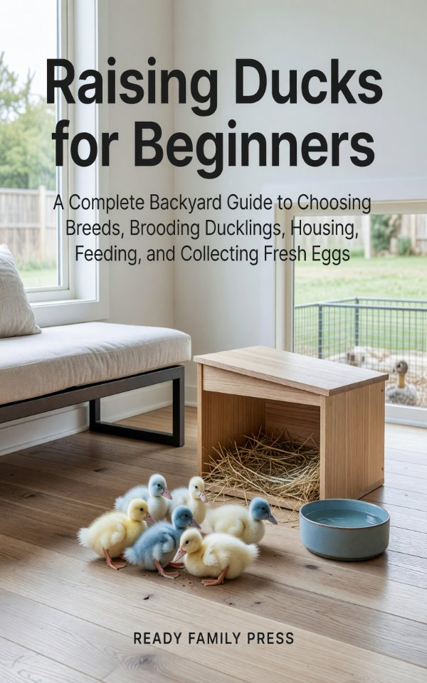

A Complete Backyard Guide to Choosing Breeds, Brooding Ducklings, Housing, Feeding, and Collecting Fresh Eggs
$4.99 on Kindle
Get it on Amazon »By Ready Family Press · Free with Kindle Unlimited
Brooder temperatures week-by-week, the niacin fix, daily/weekly chores, a duck first-aid kit, and a predator-proofing walkthrough — one printable page.
Ducks are hardier than chickens, lay richer eggs, resist the mites and respiratory illnesses that plague henhouses, and turn a backyard into a working, slug-eating, fertilizing ecosystem. Many breeds keep laying right through winter when chickens stop.
No. Ducks need constant fresh drinking water deep enough to submerge their bills, but they do not need a pond to be healthy. A shallow tub they can dunk their heads in is enough; bathing water is a nice-to-have.
At least two, and three to four is better. Ducks are flock animals and a lone duck becomes stressed and noisy. Keep a drake only if you want fertile eggs.
Easier in many ways — hardier, more cold-tolerant, better winter layers, fewer mites and respiratory issues. The trade-off is water: they splash, and their manure is wet, so bedding needs more attention.
Lighter egg breeds often start at 17–24 weeks; heavier breeds at 20–30 weeks (about five to seven months). A duck that matures in late fall may wait for spring daylight.
Often yes — but check local ordinances and HOA rules first. Some cap bird numbers, require a permit, or ban drakes for noise. Quieter breeds like Muscovy help.
• The Heritage Turkey Homestead — a self-sustaining heritage turkey flock from poult to breeding stock.
• Quail Raising for Beginners — fast eggs and meat from the easiest backyard bird to start with.
• The Family Food and Fuel Prepping Handbook — a calm, practical home reserve.
Grab the free Quick-Start Checklist, then get the full guide on Kindle.
As an Amazon Associate I earn from qualifying purchases. Certain content that appears on this site comes from Amazon. This content is provided "as is" and is subject to change or removal at any time.